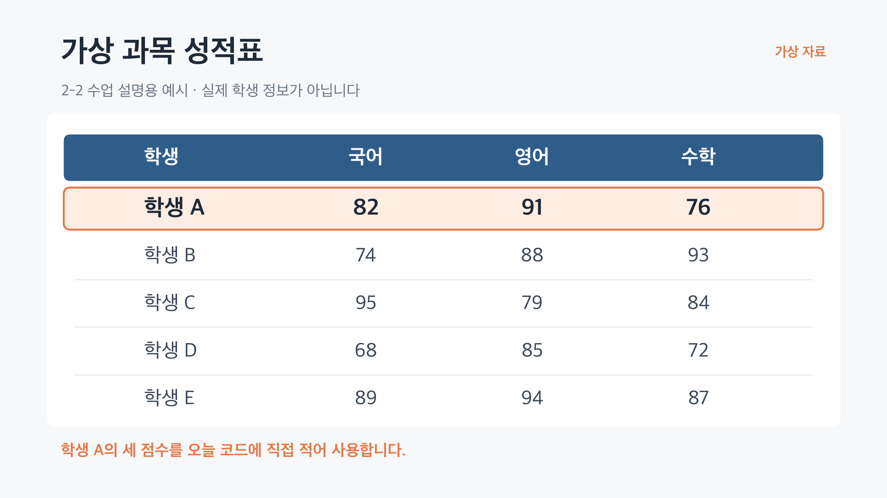
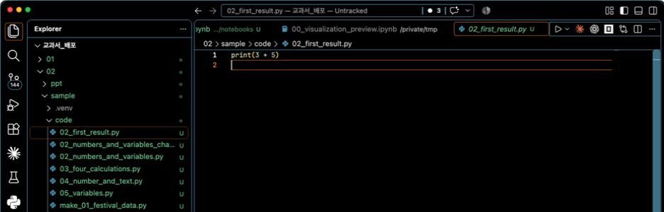

숫자와 변수로 계산하기用数字与变量进行计算
같은 숫자라도 뜻은 서로 다르다相同的数字也可能有不同意义
성적표의 82는 그냥 숫자 82가 아니라 학생 A의 국어 점수입니다. 숫자에 뜻이 드러나는 이름을 붙이면 코드에서도 무엇을 계산하는지 알아보기 쉬워집니다.成绩表中的 82 不只是数字 82，而是学生 A 的语文成绩。给数字加上能看出含义的名称，代码中的计算也更容易理解。

학생 A의 82·91·76을 코드에서 서로 구분하려면 어떤 이름을 붙이면 좋을까?为了在代码中区分学生 A 的 82、91、76，可以给它们起什么名称？
이 성적표는 화면에서 숫자의 뜻을 설명하기 위해 준비한 자료입니다.这张成绩表是为了说明画面中数字的含义而准备的资料。
실행 버튼을 누르면 결과가 나타난다点击运行按钮后显示结果 실습实践
이번에는 일반 Python 파일 .py를 사용합니다. 왼쪽 탐색기에서 sample → code → 02_first_result.py를 차례로 찾아 엽니다.这次使用普通的 Python 文件 .py。在左侧资源管理器中依次找到并打开 sample → code → 02_first_result.py。

① ②02_first_result.py
| 코드代码 | 뜻含义 |
|---|---|
3, 5 | 계산에 사용할 숫자用于计算的数字 |
+ | 두 숫자를 더하라는 표시把两个数字相加 |
print(...) | 괄호 안의 값이나 결과를 화면에 보여 주는 기능把括号中的值或结果显示出来 |
실행 버튼을 누른 뒤 VS Code 아래쪽 터미널에서 결과만 읽습니다. 이번 실습에서는 실행 명령을 직접 입력하지 않습니다.点击运行按钮后，只需在 VS Code 下方终端读取结果。本次实践不手动输入运行命令。
네 가지 기호로 계산한다用四个符号进行计算
Python의 더하기와 빼기는 익숙하지만, 곱하기와 나누기 기호는 수학 시간과 조금 다릅니다.Python 的加法和减法很熟悉，但乘法与除法符号和数学课稍有不同。
| 기호符号 | 뜻含义 | 준비된 코드准备好的代码 | 결과结果 |
|---|---|---|---|
+ | 더하기加 | print(8 + 2) | 10 |
- | 빼기减 | print(8 - 2) | 6 |
* | 곱하기乘 | print(8 * 2) | 16 |
/ | 나누기除 | print(8 / 2) | 4.0 |
print(8 + 2) print(8 - 2) print(8 * 2) print(8 / 2)
10 6 16 4.0
4.0은 4와 같은 크기의 수입니다. 나누기 결과가 소수점이 있는 모양으로 보일 수 있다는 정도만 알아둡니다.4.0 与 4 大小相同。只需知道除法结果可能显示为带小数点的形式。
숫자처럼 보여도 글자일 수 있다看起来像数字，也可能是文字
자료형(type)은 값의 종류입니다. 따옴표가 있는지 없는지만 달라도 Python은 서로 다른 종류로 이해합니다.数据类型(type)是值的种类。即使只差引号，Python 也会把它们理解为不同的种类。
print(2 + 3)
숫자끼리 더하면 계산한다.数字相加会进行计算。
print('2' + '3')글자끼리 더하면 앞뒤로 잇는다.文字相加会前后连接。
print('2' + 3)종류가 달라 그대로 더할 수 없다.类型不同，不能直接相加。
| 모양形式 | 종류 이름类型名称 | 오늘 확인할 것今天要确认 |
|---|---|---|
2, 3 | int | 계산할 수 있는 정수可以计算的整数 |
'2', '3' | str | 따옴표 안에 있는 글자引号中的文字 |
'2' + 3 | str + int | 서로 다른 종류라 오류가 난다类型不同，因此发生错误 |
오류 문장을 외우지 않습니다. AI가 만든 코드에서 따옴표의 유무에 따라 값의 종류와 결과가 달라질 수 있다는 점을 확인합니다.不需要背错误信息。只需确认 AI 生成的代码会因是否有引号而改变值的类型与结果。
변수는 값의 뜻을 알려 주는 이름표다变量是说明值含义的标签
어떤 과목의 점수인지 알기 어렵다.很难知道是哪一科的分数。
student_name = '학생 A' korean_score = 82 english_score = 91 math_score = 76
| 코드 한 줄一行代码 | 자연어로 읽기用自然语言阅读 |
|---|---|
student_name = '학생 A' | ‘학생 A’라는 글자에 student_name이라는 이름을 붙인다.给“学生 A”这段文字取名为 student_name。 |
korean_score = 82 | 82라는 숫자에 korean_score라는 이름을 붙인다.给数字 82 取名为 korean_score。 |
=은 무엇을 뜻할까 表示什么수학 문제의 “양쪽이 같다”보다, 오른쪽 값을 왼쪽 이름에 저장한다고 읽는 편이 이해하기 쉽습니다.与其理解为数学中的“两边相等”，不如读作把右边的值存到左边的名称中。
학생 A의 합계와 평균을 구한다计算学生 A 的总分与平均分
성적표에서 학생 A의 숫자 세 개를 찾고, 같은 숫자가 코드에 올바른 이름으로 들어갔는지 먼저 대조합니다.先在成绩表中找到学生 A 的三个数字，再核对代码中是否以正确名称使用了相同数字。
korean_score = 82 english_score = 91 math_score = 76 total = korean_score + english_score + math_score average = total / 3 print(total) print(average)
코드를 직접 바꾸기 전에, 표의 숫자와 코드의 숫자가 같은지 읽고 대조하는 것이 먼저입니다.在修改代码之前，先阅读并核对表格数字与代码数字是否一致。
실행되기 전에 결과를 생각한다运行前先思考结果 실습实践
코드가 오류 없이 실행되는 것과 우리가 원한 계산을 하는 것은 다릅니다. 실행 버튼을 누르기 전에 어떤 결과가 나와야 하는지 먼저 예상합니다.代码没有报错，与代码完成了我们想要的计算并不相同。点击运行前，先预测应该得到什么结果。
- 어떤 숫자와 글자가 있는지 찾는다.找出有哪些数字与文字。
- 각 값에 어떤 변수 이름이 붙었는지 찾는다.找出每个值对应的变量名。
- 어떤 계산을 하는지 읽는다.阅读进行了什么计算。
- 합계와 평균을 먼저 예상한다.先预测总分与平均分。
- Run Python File을 누르고 실제 결과와 비교한다.点击 Run Python File，与实际结果比较。
82 + 91 + 76 = ?합계 / 3 = ?
249
83.0
예상과 다르면 바로 AI에게 다시 맡기지 않습니다. 먼저 표의 숫자, 변수에 저장된 숫자, 계산식, 출력값을 순서대로 봅니다.如果结果与预测不同，不要马上再次交给 AI。先依次检查表格数字、变量中的数字、计算式与输出值。
요청한 뒤에는 파일을 열어 확인한다提出请求后要打开文件确认 실습实践
학생 이름은 '학생 A'이고, 국어 점수는 82점, 영어 점수는 91점, 수학 점수는 76점이야. 학생 이름과 세 과목의 합계, 평균을 print로 보여 주는 짧은 Python 파일을 만들어 줘. 변수 이름은 값의 뜻이 드러나게 하고, 복잡한 기능은 사용하지 마.
AI가 “완료했습니다”라고 답해도 아직 끝난 것이 아닙니다. 채팅 답변이 아니라 실제로 만들어진 .py 파일을 엽니다.即使 AI 回答“已完成”，工作也还没结束。不要只看聊天回答，要打开实际生成的 .py 文件。
- 숫자 82·91·76이 정확히 들어 있는가?数字 82、91、76 是否正确？
'학생 A'가 따옴표로 감싸져 있는가?'学生 A'是否被引号包围？- 변수 이름만 보고 값의 뜻을 알 수 있는가?只看变量名能否理解值的含义？
- 합계와 평균 계산식이 우리가 요청한 내용과 같은가?总分与平均分计算是否符合请求？
- 예상한 결과와 실행 결과가 같은가?预测结果与运行结果是否一致？
AI가 만든 코드를 이해하지 못한 채 실행 결과만 보고 넘어가지 않습니다. 적어도 사용한 값·변수 이름·계산식·출력값은 사람이 확인합니다.不能在不理解 AI 代码的情况下只看运行结果。至少要由人确认使用的值、变量名、计算式与输出值。
값·이름·계산을 읽을 수 있으면 된다能读懂值、名称与计算即可
print()는 값과 계산 결과를 화면에 보여 준다.print()会把值与计算结果显示在画面上。- 숫자끼리의
+는 계산하고, 문자열끼리의+는 글자를 잇는다.数字之间的+会计算，字符串之间的+会连接文字。 - 변수는 값의 뜻을 알려 주는 이름표다.变量是说明值含义的标签。
- AI가 만든 코드에서도 숫자·문자열·변수·계산식을 사람이 확인한다.AI 生成的代码也要由人确认数字、字符串、变量与计算式。
- 실행 전에 예상하고 실제 결과와 비교한다.运行前先预测，再与实际结果比较。
AI가 코드를 만들 수 있어도, 어떤 값으로 무엇을 계산했는지는 사람이 확인해야 한다.即使 AI 能生成代码，人也必须确认它用什么值做了什么计算。
지금까지는 값을 저장하고 계산했습니다. 다음에는 두 값을 비교해 나온 참과 거짓을 이용하여 프로그램이 판단하는 방법을 살펴봅니다.到目前为止，我们存储并计算了值。下一课将利用比较得到的真与假，观察程序如何作出判断。